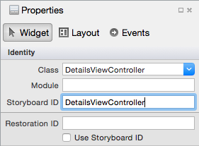

Duration
20 minutes
Goals
The primary goal of this lab is to add interactivity to the rows of a Table View. You will navigate to a details view in response to a tap on the row. You will add a cell accessory view and show an alert when the accessory view is tapped.
Required assets
There is a completed solution in the Part 04 Resources folder. In addition, if you did not complete the prior exercise, you can use the completed solution from that exercise as a starting point here.
Challenge
You will be continuing from the prior exercise and extending your code-based Table View implementation to manage interactivity. Here are the basic steps you will be performing:
- Create a new screen in the Storyboard - you will show this screen when the user taps on a row.
- Set an accessory style on the generated cell.
- Navigate to the details screen when the user taps on a row.
- Show an alert when the user taps on the accessory button.
Steps
Below are the step-by-step instructions to implement the exercise. We will be working only with the code-based Table View in this exercise.
Add a Details screen
Let's start by adding a details screen in the Storyboard. We will display this screen when the user taps on a row. Creating a new screen is somewhat outside the scope of this course; however, it is common when working with Table Views so it will be helpful to see how it is done.
- Open the Main.storyboard file.
- Drag a View Controller from the Toolbox onto the design surface (it's easiest to drag it to an open area, you can zoom out if you need more space).
- Give the new View Controller a Class of "DetailsViewController" - remember you need to select the View Controller in the black status bar or in the Document Outline, then you can set the Class in the Property tab. This will create the code-behind class for the View Controller.
- While you are in the properties, give the View Controller a Storyboard ID as well (use the code-behind class name as the ID). This will allow us to instantiate this View Controller from code by this identifier. The properties should look something like this: 
- Drag a Button from the Toolbox onto your new View Controller. You can place it anywhere - the position does not matter. We will use this button to go back to the prior screen, so change the text to "Back".
- With the button selected in the designer, switch to the "Events" tab in the property panel and add a new event named "OnDismiss" to the Touch Up Inside event.
-
Drag a Label from the Toolbox onto the new View Controller.
- Resize it to be a large block so it can fit multiple lines of text as shown below in the image. You might want to change to a phone view to fit this properly - this is done in the toolbar on the top with the "VIEW AS" drop-down. Change it to iPhone 5 just so you can see how large the space will actually be.
- Give the Label a name in the Properties of "EmailText", if you see a warning exclamation mark in the Name property after doing this, it likely means you have not created a class for the View Controller back in step #3.
- Change the Lines property to "5" which will allow the text to wrap within the label up to 5 lines.
- Open the DetailsViewController.cs code behind file for the new screen and add the following highlighted code to it (just copy and paste it).

partial class DetailsViewController : UIViewController
{
public DetailsViewController (IntPtr handle) : base (handle)
{
}
EmailItem item;
public EmailItem Item {
get {
return item;
}
set {
item = value;
UpdateItem();
}
}
public override void ViewWillAppear(bool animated)
{
base.ViewWillAppear(animated);
UpdateItem();
}
public void UpdateItem()
{
if (EmailText != null) {
EmailText.Text = (Item != null) ? Item.ToString() : "";
}
}
partial void OnDismiss(UIButton sender)
{
DismissViewController(true, null);
}
}
The new code adds a property (Item) which will hold the selected EmailItem.
When that property is set, it will fill in the label with the text of the email. To ensure that this always happens,
we call the update method both when the property is set and when the view is shown on the screen.
It also implements the OnDismiss event handler you added to the button and calls the DismissViewController
method which will close this screen. These methods and managing navigation are all discussed in the Navigation in iOS course.
Adding an accessory view
Let's add a navigation accessory to the cell.
-
Open the source file where you have your
UITableViewSourceimplementation and find theGetCellmethod. -
Set the
Accessoryproperty on the cell to DetailDisclosureButton. This will add a navigation chevron and a details button to the row.
Managing Row Selection in code
Next, let's use our code-based Table View to navigate to this new screen when we tap on the row.
-
Open the source file where you have your
UITableViewSourceimplementation. Recall that theUITableViewSourceacts as both the data source and the delegate. -
Add an override for the
RowSelectedmethod. This is what will be called when you tap on a row. We need to do the following things:-
Instantiate the "DetailsViewController". We can't do this through
newbut instead have to use theUIStoryboard.InstantiateViewControllermethod supplied by iOS to make sure the subviews are all initialized properly. Here's the code you need for this:// Create the View Controller in the Main storyboard. var storyboard = UIStoryboard.FromName("Main", null); var detailViewController = (DetailsViewController) storyboard.InstantiateViewController( "DetailsViewController");Note that this code assumes your Storyboard has the filename "Main.storyboard" and that you set the Storyboard ID on your details view to be "DetailsViewController" as specified above. The solution template in Visual Studio might create a storyboard with a different filename. -
Locate the proper
EmailItemfrom the passedNSIndexPath. -
Assign the
EmailItemto theItemproperty in the details view controller (remember we added theItemproperty above).
-
Instantiate the "DetailsViewController". We can't do this through
-
Once we've got the details view ready, we can then "push" it onto the screen using the
UIViewController.ShowDetailViewControllermethod. This will require access to the View Controller that is displaying the Table View.-
Add a constructor to your
UITableViewSourceclass which takes a view controller as a parameter and saves it in a field. -
Modify the
ViewDidLoadmethod where theUITableViewSourceclass is created to pass the "this" reference. -
Back in your
RowSelectedmethod, callShowDetailViewControlleron the cached field, passing the details view controller and the parent view controller (the field).
-
Add a constructor to your
-
Check the code hint below to see the full set of changes to your
EmailServerDataSourceclass. - Run the application and tap on a row to show the second screen with the detailed email information. Tap on the Back button to dismiss the details screen.
Optional: Handle the Accessory click
In a previous step, we set the Accessory property of the cell to display a navigation chevron and a details button in the row. Currently, tapping on the accessory button does nothing (you can run the app to test this if you would like to). Here we will add support to handle the accessory button tap.
-
In your
UITableViewSourceclass, override theAccessoryButtonTappedmethod. Let's show an alert in response.-
Locate the proper
EmailItemfrom the passedNSIndexPath. -
Create a new
UIAlertControllerwith the Alert style to display the email with a single "OK" button. Use theToStringmethod on theEmailItemto generate the body of the alert. Here's the code fragment you need:var controller = UIAlertController.Create("Email Details", emailItem.ToString(), UIAlertControllerStyle.Alert); controller.AddAction(UIAlertAction.Create("OK", UIAlertActionStyle.Default, null)); -
Display the alert using the
UIViewController.PresentViewControllermethod - this method is used to show content over an existing view controller. Recall you have aUIViewControllerin a field.
-
Locate the proper
- Run the application and tap on the "information" button at the right to see the alert displayed.
Summary
In this exercise, you have added a view accessory to the UITableViewCell and provided some basic navigation in response to a row selection.